Visuell identitet · Logo
HUB
Et nytt sted å møtes. Mer kan vi ikke si ennå.
LeveranseIdé, konsept, visuell profil
År2026
StatusUnder utvikling

01
Logo
Navnet er hentet fra tippekupongen. H, U og B står for hjemme, uavgjort og borte, de tre utfallene alle som har tippet en kamp kjenner igjen.
Hver bokstav står i sin egen firkant, slik rutene på kupongen gjør. Rammen er en tidel av firkanten, og hjørnene er alltid skarpe. Firkantene står side om side, men hver for seg, med egne vegger. Det er ikke tilfeldig, men mer om det senere.
H
HjemmeU
UavgjortB
Borte

02
Farger
Rosafargen er også hentet fra tippekupongen. Den bærer profilen, mens blekk og krem gir den ro.
Rosa#D0426A
Dyp rosa#A8304F
Blekk#17141A
Krem#F6F2EE
03
Typografi
Overskrift · Bricolage GrotesqueAaSnart åpner dørene.
Brødtekst · DM SansAaRolig og lettlest. Brukes til alt som skal forklares, og veier opp for de tunge overskriftene.
← Alle arbeider
© 2026 Kristian Dalen